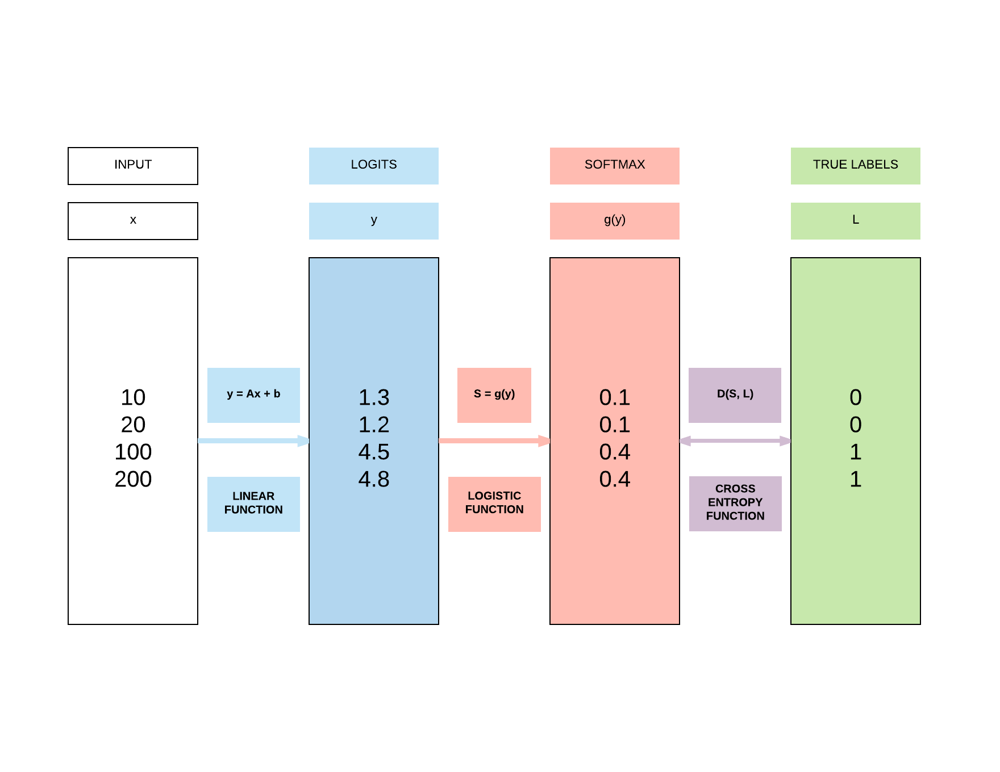
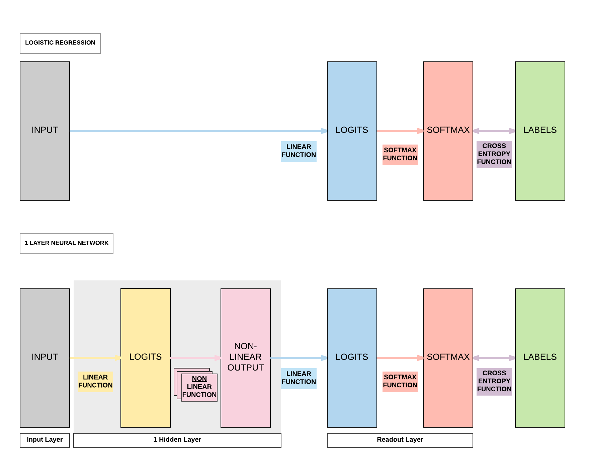
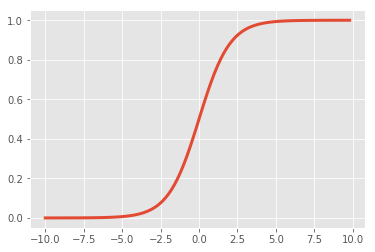
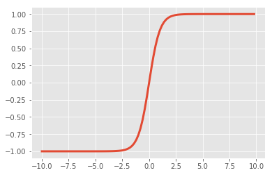
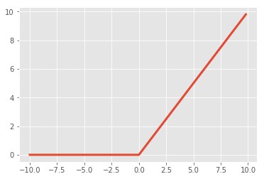
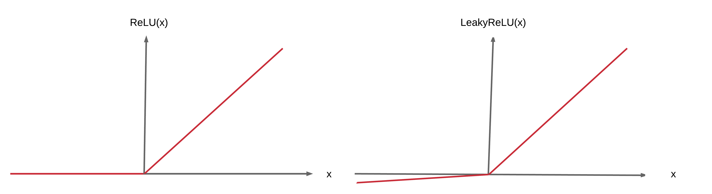
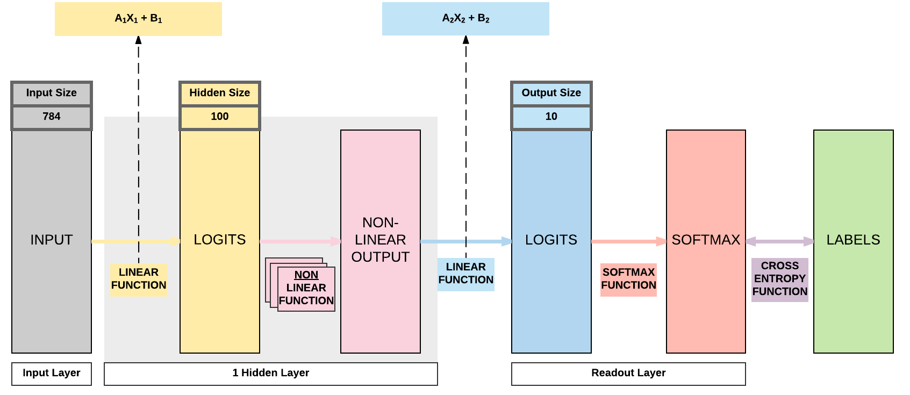

Weight Initializations & Activation Functions¶
Run Jupyter Notebook
You can run the code for this section in this jupyter notebook link.
Recap of Logistic Regression¶

Recap of Feedforward Neural Network Activation Function¶

Sigmoid (Logistic)¶
- \sigma(x) = \frac{1}{1 + e^{-x}}
- Input number \rightarrow [0, 1]
- Large negative number \rightarrow 0
- Large positive number \rightarrow 1
- Cons:
- Activation saturates at 0 or 1 with gradients \approx 0
- No signal to update weights \rightarrow cannot learn
- Solution: Have to carefully initialize weights to prevent this
- Activation saturates at 0 or 1 with gradients \approx 0
import matplotlib.pyplot as plt %matplotlib inline import numpy as np def sigmoid(x): a = [] for item in x: a.append(1/(1+np.exp(-item))) return a x = np.arange(-10., 10., 0.2) sig = sigmoid(x) plt.style.use('ggplot') plt.plot(x,sig, linewidth=3.0)

Tanh¶
- \tanh(x) = 2 \sigma(2x) -1
- A scaled sigmoid function
- Input number \rightarrow [-1, 1]
- Cons:
- Activation saturates at 0 or 1 with gradients \approx 0
- No signal to update weights \rightarrow cannot learn
- Solution: Have to carefully initialize weights to prevent this
- Activation saturates at 0 or 1 with gradients \approx 0
x = np.arange(-10., 10., 0.2) tanh = np.dot(2, sigmoid(np.dot(2, x))) - 1 plt.plot(x,tanh, linewidth=3.0)

ReLUs¶
- f(x) = \max(0, x)
- Pros:
- Accelerates convergence \rightarrow train faster
- Less computationally expensive operation compared to Sigmoid/Tanh exponentials
- Cons:
- Many ReLU units "die" \rightarrow gradients = 0 forever
- Solution: careful learning rate and weight initialization choice
- Many ReLU units "die" \rightarrow gradients = 0 forever
x = np.arange(-10., 10., 0.2) relu = np.maximum(x, 0) plt.plot(x,relu, linewidth=3.0)

Why do we need weight initializations or new activation functions?¶
- To prevent vanishing/exploding gradients
Case 1: Sigmoid/Tanh¶
- Problem
- If variance of input too large: gradients = 0 (vanishing gradients)
- If variance of input too small: linear \rightarrow gradients = constant value
- Solutions
- Want a constant variance of input to achieve non-linearity \rightarrow unique gradients for unique updates
- Xavier Initialization (good constant variance for Sigmoid/Tanh)
- ReLU or Leaky ReLU
- Want a constant variance of input to achieve non-linearity \rightarrow unique gradients for unique updates
Case 2: ReLU¶
- Solution to Case 1
- Regardless of variance of input: gradients = 0 or 1
- Problem
- But those with 0: no updates ("dead ReLU units")
- Has unlimited output size with input > 0 (explodes gradients subsequently)
- Solutions
- He Initialization (good constant variance)
- Leaky ReLU
Case 3: Leaky ReLU¶
- Solution to Case 2
- Solves the 0 signal issue when input < 0 
- Problem
- Has unlimited output size with input > 0 (explodes)
- Solution
- He Initialization (good constant variance)
Summary of weight initialization solutions to activations¶
- Tanh/Sigmoid vanishing gradients can be solved with Xavier initialization
- Good range of constant variance
- ReLU/Leaky ReLU exploding gradients can be solved with He initialization
- Good range of constant variance
Types of weight intializations¶
Zero Initialization: set all weights to 0¶
- Every neuron in the network computes the same output \rightarrow computes the same gradient \rightarrow same parameter updates
Normal Initialization: set all weights to random small numbers¶
- Every neuron in the network computes different output \rightarrow computes different gradient \rightarrow different parameter updates
- "Symmetry breaking"
- Problem: variance that grows with the number of inputs
Lecun Initialization: normalize variance¶
- Solves growing variance with the number of inputs \rightarrow constant variance
- Look at a simple feedforward neural network 
Equations for Lecun Initialization¶
- Y = AX + B
- y = a_1x_1 + a_2x_2 + \cdot + a_n x_n + b
- Var(y) = Var(a_1x_1 + a_2x_2 + \cdot + a_n x_n + b)
- Var(a_i x_i) = E(x_i)^2 Var(a_i) + E(a_i)^2Var(x_i) + Var(a_i)Var(x_i)
- General term, you might be more familiar with the following
- Var(XY) = E(X)^2 Var(Y) + E(Y)^2Var(X) + Var(X)Var(Y)
- E(x_i): expectation/mean of x_i
- E(a_i): expectation/mean of a_i
- General term, you might be more familiar with the following
- Assuming inputs/weights drawn i.i.d. with Gaussian distribution of mean=0
- E(x_i) = E(a_i) = 0
- Var(a_i x_i) = Var(a_i)Var(x_i)
- Var(y) = Var(a_1)Var(x_1) + \cdot + Var(a_n)Var(x_n)
- Since the bias, b, is a constant, Var(b) = 0
- Since i.i.d.
- Var(y) = n \times Var(a_i)Var(x_i)
- Since we want constant variance where Var(y) = Var(x_i)
- 1 = nVar(a_i)
- Var(a_i) = \frac{1}{n}
- This is essentially Lecun initialization, from his paper titled "Efficient Backpropagation"
- We draw our weights i.i.d. with mean=0 and variance = \frac{1}{n}
- Where n is the number of input units in the weight tensor
Improvements to Lecun Intialization¶
- They are essentially slight modifications to Lecun'98 initialization
- Xavier Intialization
- Works better for layers with Sigmoid activations
- var(a_i) = \frac{1}{n_{in} + n_{out}}
- Where n_{in} and n_{out} are the number of input and output units in the weight tensor respectively
- Kaiming Initialization
- Works better for layers with ReLU or LeakyReLU activations
- var(a_i) = \frac{2}{n_{in}}
Summary of weight initializations¶
- Normal Distribution
- Lecun Normal Distribution
- Xavier (Glorot) Normal Distribution
- Kaiming (He) Normal Distribution
Weight Initializations with PyTorch¶
Normal Initialization: Tanh Activation¶
import torch import torch.nn as nn import torchvision.transforms as transforms import torchvision.datasets as dsets from torch.autograd import Variable # Set seed torch.manual_seed(0) # Scheduler import from torch.optim.lr_scheduler import StepLR ''' STEP 1: LOADING DATASET ''' train_dataset = dsets.MNIST(root='./data', train=True, transform=transforms.ToTensor(), download=True) test_dataset = dsets.MNIST(root='./data', train=False, transform=transforms.ToTensor()) ''' STEP 2: MAKING DATASET ITERABLE ''' batch_size = 100 n_iters = 3000 num_epochs = n_iters / (len(train_dataset) / batch_size) num_epochs = int(num_epochs) train_loader = torch.utils.data.DataLoader(dataset=train_dataset, batch_size=batch_size, shuffle=True) test_loader = torch.utils.data.DataLoader(dataset=test_dataset, batch_size=batch_size, shuffle=False) ''' STEP 3: CREATE MODEL CLASS ''' class FeedforwardNeuralNetModel(nn.Module): def __init__(self, input_dim, hidden_dim, output_dim): super(FeedforwardNeuralNetModel, self).__init__() # Linear function self.fc1 = nn.Linear(input_dim, hidden_dim) # Linear weight, W, Y = WX + B nn.init.normal_(self.fc1.weight, mean=0, std=1) # Non-linearity self.tanh = nn.Tanh() # Linear function (readout) self.fc2 = nn.Linear(hidden_dim, output_dim) nn.init.normal_(self.fc2.weight, mean=0, std=1) def forward(self, x): # Linear function out = self.fc1(x) # Non-linearity out = self.tanh(out) # Linear function (readout) out = self.fc2(out) return out ''' STEP 4: INSTANTIATE MODEL CLASS ''' input_dim = 28*28 hidden_dim = 100 output_dim = 10 model = FeedforwardNeuralNetModel(input_dim, hidden_dim, output_dim) ''' STEP 5: INSTANTIATE LOSS CLASS ''' criterion = nn.CrossEntropyLoss() ''' STEP 6: INSTANTIATE OPTIMIZER CLASS ''' learning_rate = 0.1 optimizer = torch.optim.SGD(model.parameters(), lr=learning_rate, momentum=0.9, nesterov=True) ''' STEP 7: INSTANTIATE STEP LEARNING SCHEDULER CLASS ''' # step_size: at how many multiples of epoch you decay # step_size = 1, after every 2 epoch, new_lr = lr*gamma # step_size = 2, after every 2 epoch, new_lr = lr*gamma # gamma = decaying factor scheduler = StepLR(optimizer, step_size=1, gamma=0.96) ''' STEP 8: TRAIN THE MODEL ''' iter = 0 for epoch in range(num_epochs): # Decay Learning Rate scheduler.step() # Print Learning Rate print('Epoch:', epoch,'LR:', scheduler.get_lr()) for i, (images, labels) in enumerate(train_loader): # Load images as tensors with gradient accumulation abilities images = images.view(-1, 28*28).requires_grad_() # Clear gradients w.r.t. parameters optimizer.zero_grad() # Forward pass to get output/logits outputs = model(images) # Calculate Loss: softmax --> cross entropy loss loss = criterion(outputs, labels) # Getting gradients w.r.t. parameters loss.backward() # Updating parameters optimizer.step() iter += 1 if iter % 500 == 0: # Calculate Accuracy correct = 0 total = 0 # Iterate through test dataset for images, labels in test_loader: # Load images to a Torch Variable images = images.view(-1, 28*28) # Forward pass only to get logits/output outputs = model(images) # Get predictions from the maximum value _, predicted = torch.max(outputs.data, 1) # Total number of labels total += labels.size(0) # Total correct predictions correct += (predicted.type(torch.FloatTensor).cpu() == labels.type(torch.FloatTensor)).sum() accuracy = 100. * correct.item() / total # Print Loss print('Iteration: {}. Loss: {}. Accuracy: {}'.format(iter, loss.item(), accuracy))
Epoch: 0 LR: [0.1] Iteration: 500. Loss: 0.5192779302597046. Accuracy: 87.9 Epoch: 1 LR: [0.096] Iteration: 1000. Loss: 0.4060308337211609. Accuracy: 90.15 Epoch: 2 LR: [0.09216] Iteration: 1500. Loss: 0.2880493104457855. Accuracy: 90.71 Epoch: 3 LR: [0.08847359999999999] Iteration: 2000. Loss: 0.23173095285892487. Accuracy: 91.99 Epoch: 4 LR: [0.084934656] Iteration: 2500. Loss: 0.23814399540424347. Accuracy: 92.32 Iteration: 3000. Loss: 0.19513173401355743. Accuracy: 92.55
Lecun Initialization: Tanh Activation¶
- By default, PyTorch uses Lecun initialization, so nothing new has to be done here compared to using Normal, Xavier or Kaiming initialization.
import torch import torch.nn as nn import torchvision.transforms as transforms import torchvision.datasets as dsets from torch.autograd import Variable # Set seed torch.manual_seed(0) # Scheduler import from torch.optim.lr_scheduler import StepLR ''' STEP 1: LOADING DATASET ''' train_dataset = dsets.MNIST(root='./data', train=True, transform=transforms.ToTensor(), download=True) test_dataset = dsets.MNIST(root='./data', train=False, transform=transforms.ToTensor()) ''' STEP 2: MAKING DATASET ITERABLE ''' batch_size = 100 n_iters = 3000 num_epochs = n_iters / (len(train_dataset) / batch_size) num_epochs = int(num_epochs) train_loader = torch.utils.data.DataLoader(dataset=train_dataset, batch_size=batch_size, shuffle=True) test_loader = torch.utils.data.DataLoader(dataset=test_dataset, batch_size=batch_size, shuffle=False) ''' STEP 3: CREATE MODEL CLASS ''' class FeedforwardNeuralNetModel(nn.Module): def __init__(self, input_dim, hidden_dim, output_dim): super(FeedforwardNeuralNetModel, self).__init__() # Linear function self.fc1 = nn.Linear(input_dim, hidden_dim) # Non-linearity self.tanh = nn.Tanh() # Linear function (readout) self.fc2 = nn.Linear(hidden_dim, output_dim) def forward(self, x): # Linear function out = self.fc1(x) # Non-linearity out = self.tanh(out) # Linear function (readout) out = self.fc2(out) return out ''' STEP 4: INSTANTIATE MODEL CLASS ''' input_dim = 28*28 hidden_dim = 100 output_dim = 10 model = FeedforwardNeuralNetModel(input_dim, hidden_dim, output_dim) ''' STEP 5: INSTANTIATE LOSS CLASS ''' criterion = nn.CrossEntropyLoss() ''' STEP 6: INSTANTIATE OPTIMIZER CLASS ''' learning_rate = 0.1 optimizer = torch.optim.SGD(model.parameters(), lr=learning_rate, momentum=0.9, nesterov=True) ''' STEP 7: INSTANTIATE STEP LEARNING SCHEDULER CLASS ''' # step_size: at how many multiples of epoch you decay # step_size = 1, after every 2 epoch, new_lr = lr*gamma # step_size = 2, after every 2 epoch, new_lr = lr*gamma # gamma = decaying factor scheduler = StepLR(optimizer, step_size=1, gamma=0.96) ''' STEP 8: TRAIN THE MODEL ''' iter = 0 for epoch in range(num_epochs): # Decay Learning Rate scheduler.step() # Print Learning Rate print('Epoch:', epoch,'LR:', scheduler.get_lr()) for i, (images, labels) in enumerate(train_loader): # Load images as tensors with gradient accumulation abilities images = images.view(-1, 28*28).requires_grad_() # Clear gradients w.r.t. parameters optimizer.zero_grad() # Forward pass to get output/logits outputs = model(images) # Calculate Loss: softmax --> cross entropy loss loss = criterion(outputs, labels) # Getting gradients w.r.t. parameters loss.backward() # Updating parameters optimizer.step() iter += 1 if iter % 500 == 0: # Calculate Accuracy correct = 0 total = 0 # Iterate through test dataset for images, labels in test_loader: # Load images to a Torch Variable images = images.view(-1, 28*28) # Forward pass only to get logits/output outputs = model(images) # Get predictions from the maximum value _, predicted = torch.max(outputs.data, 1) # Total number of labels total += labels.size(0) # Total correct predictions correct += (predicted.type(torch.FloatTensor).cpu() == labels.type(torch.FloatTensor)).sum() accuracy = 100. * correct.item() / total # Print Loss print('Iteration: {}. Loss: {}. Accuracy: {}'.format(iter, loss.item(), accuracy))
Epoch: 0 LR: [0.1] Iteration: 500. Loss: 0.20123475790023804. Accuracy: 95.63 Epoch: 1 LR: [0.096] Iteration: 1000. Loss: 0.10885068774223328. Accuracy: 96.48 Epoch: 2 LR: [0.09216] Iteration: 1500. Loss: 0.1296212077140808. Accuracy: 97.22 Epoch: 3 LR: [0.08847359999999999] Iteration: 2000. Loss: 0.05178885534405708. Accuracy: 97.36 Epoch: 4 LR: [0.084934656] Iteration: 2500. Loss: 0.02619408629834652. Accuracy: 97.61 Iteration: 3000. Loss: 0.02096685953438282. Accuracy: 97.7
Xavier Initialization: Tanh Activation¶
import torch import torch.nn as nn import torchvision.transforms as transforms import torchvision.datasets as dsets from torch.autograd import Variable # Set seed torch.manual_seed(0) # Scheduler import from torch.optim.lr_scheduler import StepLR ''' STEP 1: LOADING DATASET ''' train_dataset = dsets.MNIST(root='./data', train=True, transform=transforms.ToTensor(), download=True) test_dataset = dsets.MNIST(root='./data', train=False, transform=transforms.ToTensor()) ''' STEP 2: MAKING DATASET ITERABLE ''' batch_size = 100 n_iters = 3000 num_epochs = n_iters / (len(train_dataset) / batch_size) num_epochs = int(num_epochs) train_loader = torch.utils.data.DataLoader(dataset=train_dataset, batch_size=batch_size, shuffle=True) test_loader = torch.utils.data.DataLoader(dataset=test_dataset, batch_size=batch_size, shuffle=False) ''' STEP 3: CREATE MODEL CLASS ''' class FeedforwardNeuralNetModel(nn.Module): def __init__(self, input_dim, hidden_dim, output_dim): super(FeedforwardNeuralNetModel, self).__init__() # Linear function self.fc1 = nn.Linear(input_dim, hidden_dim) # Linear weight, W, Y = WX + B nn.init.xavier_normal_(self.fc1.weight) # Non-linearity self.tanh = nn.Tanh() # Linear function (readout) self.fc2 = nn.Linear(hidden_dim, output_dim) nn.init.xavier_normal_(self.fc2.weight) def forward(self, x): # Linear function out = self.fc1(x) # Non-linearity out = self.tanh(out) # Linear function (readout) out = self.fc2(out) return out ''' STEP 4: INSTANTIATE MODEL CLASS ''' input_dim = 28*28 hidden_dim = 100 output_dim = 10 model = FeedforwardNeuralNetModel(input_dim, hidden_dim, output_dim) ''' STEP 5: INSTANTIATE LOSS CLASS ''' criterion = nn.CrossEntropyLoss() ''' STEP 6: INSTANTIATE OPTIMIZER CLASS ''' learning_rate = 0.1 optimizer = torch.optim.SGD(model.parameters(), lr=learning_rate, momentum=0.9, nesterov=True) ''' STEP 7: INSTANTIATE STEP LEARNING SCHEDULER CLASS ''' # step_size: at how many multiples of epoch you decay # step_size = 1, after every 2 epoch, new_lr = lr*gamma # step_size = 2, after every 2 epoch, new_lr = lr*gamma # gamma = decaying factor scheduler = StepLR(optimizer, step_size=1, gamma=0.96) ''' STEP 8: TRAIN THE MODEL ''' iter = 0 for epoch in range(num_epochs): # Decay Learning Rate scheduler.step() # Print Learning Rate print('Epoch:', epoch,'LR:', scheduler.get_lr()) for i, (images, labels) in enumerate(train_loader): # Load images as tensors with gradient accumulation abilities images = images.view(-1, 28*28).requires_grad_() # Clear gradients w.r.t. parameters optimizer.zero_grad() # Forward pass to get output/logits outputs = model(images) # Calculate Loss: softmax --> cross entropy loss loss = criterion(outputs, labels) # Getting gradients w.r.t. parameters loss.backward() # Updating parameters optimizer.step() iter += 1 if iter % 500 == 0: # Calculate Accuracy correct = 0 total = 0 # Iterate through test dataset for images, labels in test_loader: # Load images to a Torch Variable images = images.view(-1, 28*28) # Forward pass only to get logits/output outputs = model(images) # Get predictions from the maximum value _, predicted = torch.max(outputs.data, 1) # Total number of labels total += labels.size(0) # Total correct predictions correct += (predicted.type(torch.FloatTensor).cpu() == labels.type(torch.FloatTensor)).sum() accuracy = 100. * correct.item() / total # Print Loss print('Iteration: {}. Loss: {}. Accuracy: {}'.format(iter, loss.item(), accuracy))
Epoch: 0 LR: [0.1] Iteration: 500. Loss: 0.14800140261650085. Accuracy: 95.43 Epoch: 1 LR: [0.096] Iteration: 1000. Loss: 0.17138008773326874. Accuracy: 96.58 Epoch: 2 LR: [0.09216] Iteration: 1500. Loss: 0.07987994700670242. Accuracy: 96.95 Epoch: 3 LR: [0.08847359999999999] Iteration: 2000. Loss: 0.07756654918193817. Accuracy: 97.23 Epoch: 4 LR: [0.084934656] Iteration: 2500. Loss: 0.05563584715127945. Accuracy: 97.6 Iteration: 3000. Loss: 0.07122127711772919. Accuracy: 97.49
Xavier Initialization: ReLU Activation¶
import torch import torch.nn as nn import torchvision.transforms as transforms import torchvision.datasets as dsets from torch.autograd import Variable # Set seed torch.manual_seed(0) # Scheduler import from torch.optim.lr_scheduler import StepLR ''' STEP 1: LOADING DATASET ''' train_dataset = dsets.MNIST(root='./data', train=True, transform=transforms.ToTensor(), download=True) test_dataset = dsets.MNIST(root='./data', train=False, transform=transforms.ToTensor()) ''' STEP 2: MAKING DATASET ITERABLE ''' batch_size = 100 n_iters = 3000 num_epochs = n_iters / (len(train_dataset) / batch_size) num_epochs = int(num_epochs) train_loader = torch.utils.data.DataLoader(dataset=train_dataset, batch_size=batch_size, shuffle=True) test_loader = torch.utils.data.DataLoader(dataset=test_dataset, batch_size=batch_size, shuffle=False) ''' STEP 3: CREATE MODEL CLASS ''' class FeedforwardNeuralNetModel(nn.Module): def __init__(self, input_dim, hidden_dim, output_dim): super(FeedforwardNeuralNetModel, self).__init__() # Linear function self.fc1 = nn.Linear(input_dim, hidden_dim) # Linear weight, W, Y = WX + B nn.init.xavier_normal_(self.fc1.weight) # Non-linearity self.relu = nn.ReLU() # Linear function (readout) self.fc2 = nn.Linear(hidden_dim, output_dim) nn.init.xavier_normal_(self.fc2.weight) def forward(self, x): # Linear function out = self.fc1(x) # Non-linearity out = self.relu(out) # Linear function (readout) out = self.fc2(out) return out ''' STEP 4: INSTANTIATE MODEL CLASS ''' input_dim = 28*28 hidden_dim = 100 output_dim = 10 model = FeedforwardNeuralNetModel(input_dim, hidden_dim, output_dim) ''' STEP 5: INSTANTIATE LOSS CLASS ''' criterion = nn.CrossEntropyLoss() ''' STEP 6: INSTANTIATE OPTIMIZER CLASS ''' learning_rate = 0.1 optimizer = torch.optim.SGD(model.parameters(), lr=learning_rate, momentum=0.9, nesterov=True) ''' STEP 7: INSTANTIATE STEP LEARNING SCHEDULER CLASS ''' # step_size: at how many multiples of epoch you decay # step_size = 1, after every 2 epoch, new_lr = lr*gamma # step_size = 2, after every 2 epoch, new_lr = lr*gamma # gamma = decaying factor scheduler = StepLR(optimizer, step_size=1, gamma=0.96) ''' STEP 8: TRAIN THE MODEL ''' iter = 0 for epoch in range(num_epochs): # Decay Learning Rate scheduler.step() # Print Learning Rate print('Epoch:', epoch,'LR:', scheduler.get_lr()) for i, (images, labels) in enumerate(train_loader): # Load images as tensors with gradient accumulation abilities images = images.view(-1, 28*28).requires_grad_() # Clear gradients w.r.t. parameters optimizer.zero_grad() # Forward pass to get output/logits outputs = model(images) # Calculate Loss: softmax --> cross entropy loss loss = criterion(outputs, labels) # Getting gradients w.r.t. parameters loss.backward() # Updating parameters optimizer.step() iter += 1 if iter % 500 == 0: # Calculate Accuracy correct = 0 total = 0 # Iterate through test dataset for images, labels in test_loader: # Load images to a Torch Variable images = images.view(-1, 28*28) # Forward pass only to get logits/output outputs = model(images) # Get predictions from the maximum value _, predicted = torch.max(outputs.data, 1) # Total number of labels total += labels.size(0) # Total correct predictions correct += (predicted.type(torch.FloatTensor).cpu() == labels.type(torch.FloatTensor)).sum() accuracy = 100. * correct.item() / total # Print Loss print('Iteration: {}. Loss: {}. Accuracy: {}'.format(iter, loss.item(), accuracy))
Epoch: 0 LR: [0.1] Iteration: 500. Loss: 0.1245984435081482. Accuracy: 95.82 Epoch: 1 LR: [0.096] Iteration: 1000. Loss: 0.14348150789737701. Accuracy: 96.72 Epoch: 2 LR: [0.09216] Iteration: 1500. Loss: 0.10421314090490341. Accuracy: 97.3 Epoch: 3 LR: [0.08847359999999999] Iteration: 2000. Loss: 0.04693891853094101. Accuracy: 97.29 Epoch: 4 LR: [0.084934656] Iteration: 2500. Loss: 0.06869587302207947. Accuracy: 97.61 Iteration: 3000. Loss: 0.056865859776735306. Accuracy: 97.48
He Initialization: ReLU Activation¶
import torch import torch.nn as nn import torchvision.transforms as transforms import torchvision.datasets as dsets from torch.autograd import Variable # Set seed torch.manual_seed(0) # Scheduler import from torch.optim.lr_scheduler import StepLR ''' STEP 1: LOADING DATASET ''' train_dataset = dsets.MNIST(root='./data', train=True, transform=transforms.ToTensor(), download=True) test_dataset = dsets.MNIST(root='./data', train=False, transform=transforms.ToTensor()) ''' STEP 2: MAKING DATASET ITERABLE ''' batch_size = 100 n_iters = 3000 num_epochs = n_iters / (len(train_dataset) / batch_size) num_epochs = int(num_epochs) train_loader = torch.utils.data.DataLoader(dataset=train_dataset, batch_size=batch_size, shuffle=True) test_loader = torch.utils.data.DataLoader(dataset=test_dataset, batch_size=batch_size, shuffle=False) ''' STEP 3: CREATE MODEL CLASS ''' class FeedforwardNeuralNetModel(nn.Module): def __init__(self, input_dim, hidden_dim, output_dim): super(FeedforwardNeuralNetModel, self).__init__() # Linear function self.fc1 = nn.Linear(input_dim, hidden_dim) # Linear weight, W, Y = WX + B nn.init.kaiming_normal_(self.fc1.weight) # Non-linearity self.relu = nn.ReLU() # Linear function (readout) self.fc2 = nn.Linear(hidden_dim, output_dim) nn.init.kaiming_normal_(self.fc2.weight) def forward(self, x): # Linear function out = self.fc1(x) # Non-linearity out = self.relu(out) # Linear function (readout) out = self.fc2(out) return out ''' STEP 4: INSTANTIATE MODEL CLASS ''' input_dim = 28*28 hidden_dim = 100 output_dim = 10 model = FeedforwardNeuralNetModel(input_dim, hidden_dim, output_dim) ''' STEP 5: INSTANTIATE LOSS CLASS ''' criterion = nn.CrossEntropyLoss() ''' STEP 6: INSTANTIATE OPTIMIZER CLASS ''' learning_rate = 0.1 optimizer = torch.optim.SGD(model.parameters(), lr=learning_rate, momentum=0.9, nesterov=True) ''' STEP 7: INSTANTIATE STEP LEARNING SCHEDULER CLASS ''' # step_size: at how many multiples of epoch you decay # step_size = 1, after every 2 epoch, new_lr = lr*gamma # step_size = 2, after every 2 epoch, new_lr = lr*gamma # gamma = decaying factor scheduler = StepLR(optimizer, step_size=1, gamma=0.96) ''' STEP 8: TRAIN THE MODEL ''' iter = 0 for epoch in range(num_epochs): # Decay Learning Rate scheduler.step() # Print Learning Rate print('Epoch:', epoch,'LR:', scheduler.get_lr()) for i, (images, labels) in enumerate(train_loader): # Load images as tensors with gradient accumulation abilities images = images.view(-1, 28*28).requires_grad_() # Clear gradients w.r.t. parameters optimizer.zero_grad() # Forward pass to get output/logits outputs = model(images) # Calculate Loss: softmax --> cross entropy loss loss = criterion(outputs, labels) # Getting gradients w.r.t. parameters loss.backward() # Updating parameters optimizer.step() iter += 1 if iter % 500 == 0: # Calculate Accuracy correct = 0 total = 0 # Iterate through test dataset for images, labels in test_loader: # Load images to a Torch Variable images = images.view(-1, 28*28) # Forward pass only to get logits/output outputs = model(images) # Get predictions from the maximum value _, predicted = torch.max(outputs.data, 1) # Total number of labels total += labels.size(0) # Total correct predictions correct += (predicted.type(torch.FloatTensor).cpu() == labels.type(torch.FloatTensor)).sum() accuracy = 100. * correct.item() / total # Print Loss print('Iteration: {}. Loss: {}. Accuracy: {}'.format(iter, loss.item(), accuracy))
Epoch: 0 LR: [0.1] Iteration: 500. Loss: 0.11658752709627151. Accuracy: 95.7 Epoch: 1 LR: [0.096] Iteration: 1000. Loss: 0.15525035560131073. Accuracy: 96.65 Epoch: 2 LR: [0.09216] Iteration: 1500. Loss: 0.09970294684171677. Accuracy: 97.07 Epoch: 3 LR: [0.08847359999999999] Iteration: 2000. Loss: 0.04063304886221886. Accuracy: 97.23 Epoch: 4 LR: [0.084934656] Iteration: 2500. Loss: 0.0719323456287384. Accuracy: 97.7 Iteration: 3000. Loss: 0.04470040276646614. Accuracy: 97.39
Initialization Performance¶
| Initialization: Activation | Test Accuracy |
|---|---|
| Normal: Tanh | 92.55 |
| Lecun: Tanh | 97.7 |
| Xavier: Tanh | 97.49 |
| Xavier: ReLU | 97.48 |
| He: ReLU | 97.39 |
Interpreting the Validation Accuracy Table
Take note that these numbers would fluctuate slightly when you change seeds.
However, the key point here is that all the other intializations are clearly much better than a basic normal distribution.
Whether He, Xavier, or Lecun intialization is better or any other initializations depends on the overall model's architecture (RNN/LSTM/CNN/FNN etc.), activation functions (ReLU, Sigmoid, Tanh etc.) and more.
For example, more advanced initializations we will cover subsequently is orthogonal initialization that works better for RNN/LSTM. But due to the math involved in that, we will be covering such advanced initializations in a separate section.
Summary¶
We've learnt...
Success
- Recap of LG
- Recap of FNN
- Recap of Activation Functions
- Sigmoid (Logistic)
- Tanh
- ReLU
- Need for Weight Initializations
- Sigmoid/Tanh: vanishing gradients
- Constant Variance initialization with Lecun or Xavier
- ReLU: exploding gradients with dead units
- He Initialization
- Leaky ReLU: exploding gradients only
- He Initialization
- Sigmoid/Tanh: vanishing gradients
- Types of weight initialisations
- Zero
- Normal: growing weight variance
- Lecun: constant variance
- Xavier: constant variance for Sigmoid/Tanh
- Kaiming He: constant variance for ReLU activations
- PyTorch implementation
Citation¶
If you have found these useful in your research, presentations, school work, projects or workshops, feel free to cite using this DOI.